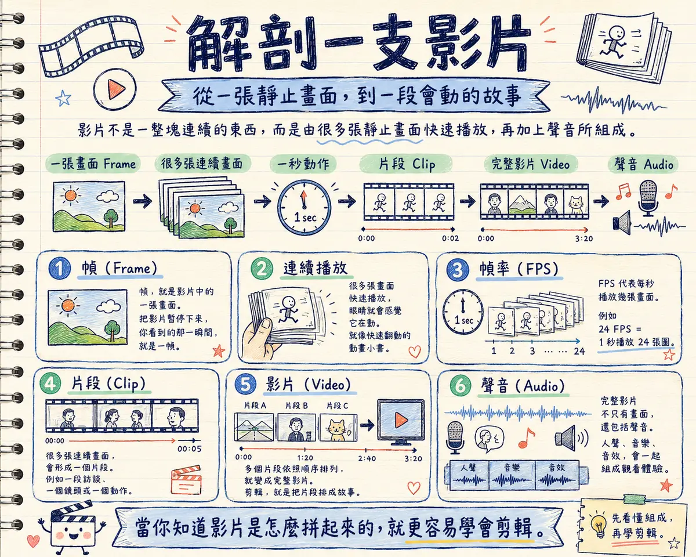
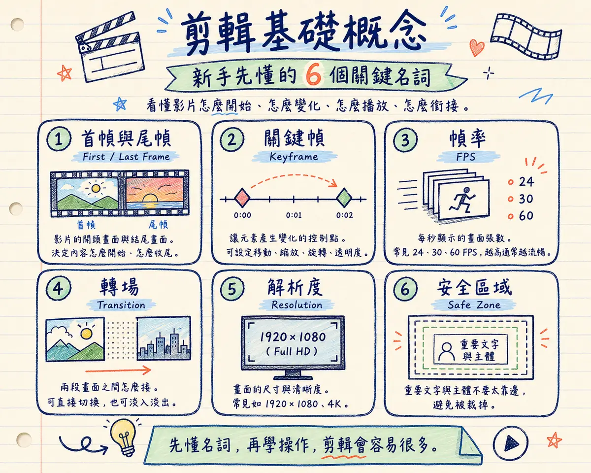
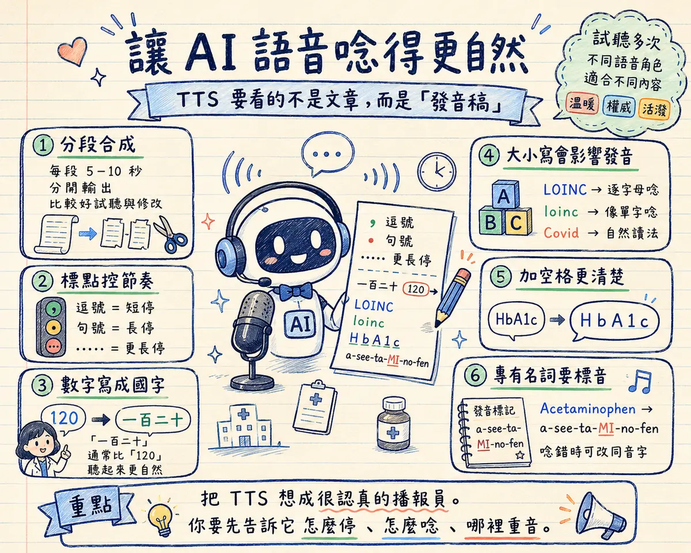

- 這頁教什麼：剪輯基礎觀念（首尾幀、關鍵幀、FPS、轉場等）、三步驟短影片製作流程、腳本生成／AI 語音合成（TTS）／AI 音樂生成（BGM）的實用 Prompt，以及免費與付費影片工具總整理。
- 適合誰：想獨立做出衛教短影片的醫療人員，建議先讀過 Part 4 — AI 圖像 熟悉生圖，再接續本頁與下一課 Part 6 — Google Flow。
- 注意：動手前先做 3 秒安全檢查（有沒有病人資料、會不會給病人看、我能不能負責），BGM 對外發布時要確認授權可商用，AI 語音與影片片段仍需人工審稿。
🔒 3 秒安全檢查
有沒有病人資料？會不會給病人看？我能不能負責？— 動手前先過這三關，任何一題讓你猶豫，先回 Part 3 — AI 安全與隱私。
剪輯基礎觀念
在使用 AI 生成影片之前，先理解幾個關鍵的剪輯概念。這些概念不管你用什麼工具都會用到。先看這兩張圖建立整體概念 — 左邊講影片是怎麼「拼」起來的，右邊是剪輯必懂的六個名詞（點圖可放大）：


首幀與尾幀（First / Last Frame）
每個影片片段的第一格畫面（首幀）和最後一格畫面（尾幀）。在 AI 影片生成中特別重要：
- 首幀 — AI 影片會從這張圖「開始動」。上傳一張靜態圖作為首幀，AI 會讓它動起來。
- 尾幀 — 影片結束時的畫面。可以指定尾幀讓動態有明確的終點。
- 實用技巧 — 上一段影片的尾幀 = 下一段影片的首幀，這樣接起來才順暢。
關鍵幀（Keyframe）
關鍵幀是你在時間軸上標記的「控制點」— 告訴軟體在這個時間點，某個元素要處於什麼狀態。
- 位置關鍵幀 — 文字/圖片從 A 點移動到 B 點
- 大小關鍵幀 — 元素從小放大（zoom in）或從大縮小
- 透明度關鍵幀 — 淡入（0% → 100%）或淡出（100% → 0%）
- Ken Burns 效果 — 靜態圖片上的緩慢平移+縮放，讓照片/插圖有「活的」感覺
對衛教影片特別實用：你用 AI 生成的插圖大多是靜態圖，每張加一點 Ken Burns 就不會像在放投影片。訣竅是幅度小、速度慢（例如 5 秒內從 100% 放到 110%）— 推太快、拉太多會讓人頭暈，反而不專業。
其他常用概念
每秒播放幾格畫面。24fps = 電影感，30fps = 流暢，60fps = 極滑順。衛教影片用 30fps 就好。
1080p（Full HD）就夠社群使用。直式 1080×1920（Reels/Shorts），橫式 1920×1080（YouTube）。
兩段影片之間的切換效果。衛教影片建議只用「淡入淡出」，花俏轉場反而不專業。
IG Reels/Shorts 的上下會被介面元素擋住。重要內容放在畫面中央 80% 的範圍內。
短影片製作流程
有了 AI 輔助，一個人就能做出品質不錯的衛教短影片。完整流程分三步：
用 ChatGPT 生成影片腳本，包含：
- 旁白文字 — 每個畫面要講什麼（控制秒數）
- 畫面描述 — 搭配什麼視覺
- 字幕重點 — 畫面上要強調的關鍵字
- 時間分配 — 30 秒影片約 5-6 個畫面
根據腳本中的畫面描述，用 AI 生成每一格的插圖：
- 每個畫面生成一張圖 — 風格要一致
- 比例選對 — 直式 9:16，橫式 16:9
- 不放文字 — 字幕在剪輯階段加
- 可混用：部分 AI 圖，部分現有照片
- 用 AI 語音合成錄製旁白（見下方 TTS 章節）
用 CapCut 匯入素材，加上：
- 配音 — 匯入 AI 語音或自己錄
- 字幕 — CapCut 自動從語音生成字幕
- 配樂 — 免費背景音樂庫選輕柔的，或用 AI 生成專屬 BGM（見下方 AI 音樂生成 章節）
- 關鍵幀 — 加 Ken Burns 效果讓靜態圖「動起來」
- 轉場 — 不要花俏，淡入淡出就好
腳本生成 Prompt
以下 Prompt 可以直接貼到 ChatGPT 使用。生成的腳本包含旁白和畫面描述。
30 秒衛教短影片
60 秒衛教影片
從腳本到分鏡圖
AI 語音合成（TTS）
Text-to-Speech（TTS）讓你不用自己錄音，AI 就能幫你把旁白文字轉成自然的語音。
Google AI Studio — 免費高品質 TTS
- 免費使用
- 中文語音品質高
- 多種語音角色
- 支援情緒調整
- 可匯出音檔
- 需 Google 帳號
- 介面為英文
- 偶有不自然的斷句
TTS 使用技巧
- 分段合成 — 每段旁白（5-10 秒）單獨合成一個音檔，不要一次貼整篇
- 加標點控制節奏 — 句號停頓長，逗號停頓短。用「……」可以製造較長的停頓
- 數字用國字 — 「一百二十」比「120」的語音更自然
- 試聽多次 — 不同語音角色適合不同類型的內容（溫暖 vs 權威 vs 活潑）
TTS 發音秘訣
AI 語音對英文縮寫和專有名詞的發音取決於大小寫和拼寫方式。善用這些技巧可以讓發音更正確：
- 全大寫 → 逐字母拼讀 — 「LOINC」會唸成 L-O-I-N-C（逐個字母）
- 全小寫 → 當單字唸 — 「loinc」會唸成「lo-in-c」（像英文單字）
- 混合大小寫 → 自然讀法 — 「Covid」唸成一個單字，「COVID」逐字母拼
- 加空格控制節奏 — 「H b A 1 c」比「HbA1c」發音更清楚
- 用注音/拼音標記 — 遇到 AI 唸錯的中文字，改用同音字替代（例：「惡心」→「噁心」）
- 英文藥名用音標拼寫 — 「Acetaminophen」可改成「a-see-ta-MI-no-fen」讓 AI 唸對重音

AI 音樂生成（BGM，Background Music）
影片的最後一塊聲音拼圖是背景音樂（BGM，Background Music）。找 BGM 有兩條路：現成音樂庫（快、授權明確）和 AI 生成（客製、獨一無二）。音樂庫找不到剛好符合氛圍與長度的曲子時，AI 生成就派上用場 — 用一句文字描述，就能做出專屬你影片的配樂。
📅 資訊更新於 2026 年 7 月 — 額度與方案以官方公告為準
Suno — 文字描述生成完整音樂
- 免費每天 50 credits（約 10 首）
- 一句文字描述就能生成完整歌曲
- 可選純音樂（Instrumental）模式
- 支援中文歌詞
- 可下載 MP3
- 免費版僅限非商業用途
- 商用授權需付費方案（Pro 以上）
- 免費額度當日清零、不累積
BGM 生成 Prompt
Suno 的風格描述用英文效果最穩定。以下範本可直接複製，再依主題調整形容詞：
BGM 使用原則
- 音量壓低 — BGM 比旁白低很多（CapCut 裡約 20-30% 音量），觀眾要「感覺得到」而不是「聽得到」
- 情緒匹配 — 衛教內容選溫暖、平靜的曲風；避免緊張懸疑感（會讓衛教變恐嚇）
- 頭尾淡入淡出 — 音樂突然開始或戛然而止都很突兀，各留 1-2 秒 fade
- 一部影片一首曲 — 30-60 秒的短影片不需要換歌，換歌會打斷情緒
免費影片工具
剪輯工具
- 免費版夠用（基本剪輯、自動字幕、匯出）
- 中文介面
- 豐富模板
- AI 配音
- 手機/電腦都能用
- 部分模板、素材與進階功能需付費或有浮水印
- 進階功能偶有廣告
AI 影片生成
- 每天 50 免費 credits
- 文字/圖片轉影片
- Gemini Omni 支援對話式編輯
- 內建分鏡工具
- 仍在實驗階段
- 需排隊
付費高品質工具
如果你對影片品質有更高要求，或需要更大量的產出，以下付費工具值得考慮。挑這三個是因為各有明確定位：品質當紅的 Seedance、控制力最強的 Runway、最好上手的 Pika。
📅 資訊更新於 2026 年 7 月 — 方案與價格以官方公告為準
AI 影片生成
- 2026 年最受關注的 AI 影片模型系列之一（字節跳動出品）
- 官方宣稱單次可生成約 30 秒連續影片 — 相較常見的 5-15 秒分段流程，角色一致性與敘事節奏更有利
- 多模態參考：可結合文字、圖片、影片、音訊與風格參考（官方說法最多 50 個參考素材）
- 已整合進 Dreamina / CapCut，本來就用 CapCut 的話不必多學一個平台
- 採 credit 計價，不便宜；實際價格、解析度與免費額度依帳號、地區與方案變動
- 生成影片的著作權、肖像權與平台授權條款仍有未決議題
- 公開發布（課程、醫院衛教、商業案）應避開名人、品牌角色與受保護 IP
- 專業級工作流的標竿，好萊塢團隊也在用
- 精確的動態控制（攝影機運動、角色動線）
- 社群教學資源最豐富
- 月費 $12 起
- 免費試用有限
- 介面最簡單，5 分鐘上手
- 獨特的特效功能（融化、爆炸、膨脹）
- 適合短片段和社群內容
- 月費 $8 起
- 長影片品質不穩
AI 語音合成
- 最自然的 AI 語音
- 可複製自己的聲音
- 多語言支援
- 情緒控制精準
- 免費額度極少
- 月費 $5 起
工具總整理
| 用途 | 免費工具 | 付費工具 |
|---|---|---|
| 寫腳本 | ChatGPT / Gemini | Claude Pro |
| AI 語音 | Google AI Studio TTS | ElevenLabs |
| AI 生影片 | Google Flow / Kling | Seedance（Dreamina）/ Runway / Pika |
| 剪輯組裝 | CapCut | Premiere Pro |
| 自動字幕 | CapCut | Premiere Pro |
| 背景音樂 | Suno（非商用）/ Pixabay / CapCut 內建 | Suno Pro / Epidemic Sound |
✨ 零成本工具組
只需要四個免費工具就能做出完整的衛教短影片：
- ChatGPT — 寫腳本 + 生圖
- Google AI Studio — AI 語音合成
- Google Flow — AI 影片片段生成
- CapCut — 組裝、字幕、配樂、匯出
四個都有免費方案，課堂練習不用辦付費帳號；實際額度、匯出限制與商用授權以各平台公告為準。